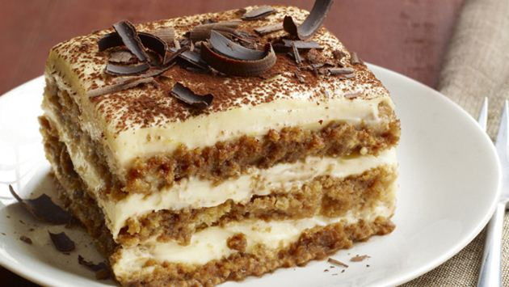

Tiramisu
Door het gebruik van alcohol is dit recept niet geschikt voor kinderen. Het gebruik van rauwe eieren wordt met het oog op salmonellabesmetting sterk afgera- den voor kwetsbare groepen, zoals kinderen tot 5 jaar, ouderen, zieken en zwangere vrouwen. Voor deze groepen zijn recepten met rauwe eieren niet geschikt.
Ingrediënten
- 125 ml verse slagroom
- 75 g witte basterdsuiker
- 4 middelgrote eieren
- 500 g mascarpone (zachte roomkaas)
- 5 el koffielikeur (of amandellikeur)
- 200 ml espressokoffie
- 175 g lange vingers
- 1 el cacaopoeder
Keukenspullen
- (oven)schaal (20 x 20 cm)
- zeef
Bereidingswijze
-
Klop de slagroom met 1/5 van de basterdsuiker in een ruime kom met een mixer bijna stijf. Maak de mixer schoon. Splits de eieren (de eiwitten worden niet gebruikt). Klop in een andere kom de eidooiers met de rest van de suiker in 5 min. tot een romig mengsel. Meng de mascarpone in delen door het eidooiermengsel. Spatel de slagroom er luchtig door.
-
Roer in een ondiep, langwerpig schaaltje de likeur door de espresso. Doop er de helft van de lange vingers een voor een in en leg ze met de koffiekant naar boven als 1 laag in de schaal. Verdeel de helft van het mascarponemengsel erover. Maak zo nog een laag met de rest van de koffie, de lange vingers en de mascarpone.
-
Laat de schaal afgedekt minimaal 2 uur in de koelkast opstijven. Neem kort voor het serveren uit de koelkast. Bestrooi de tiramisu met behulp van een zeefje met de cacaopoeder.

Bewaartip:Je kunt de tiramisu maximaal 1 dag van tevoren bereiden. Bewaar tot gebruik afgedekt in de koelkast.